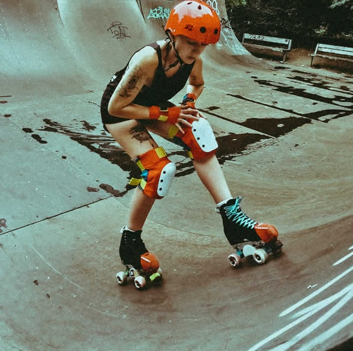
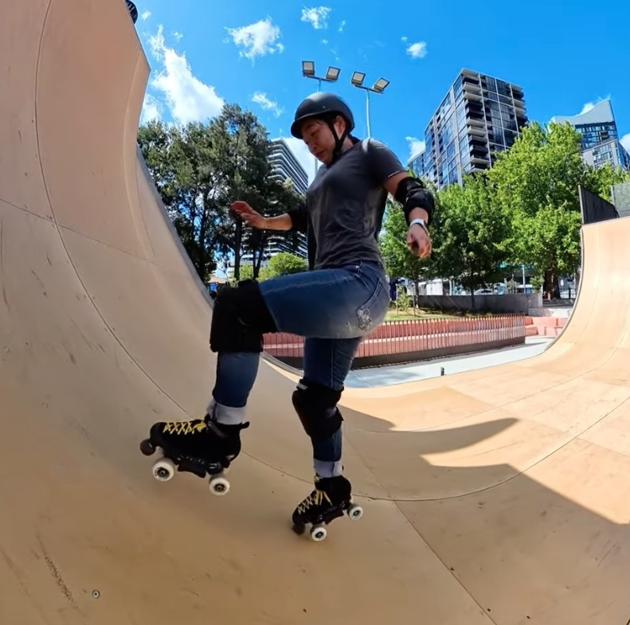
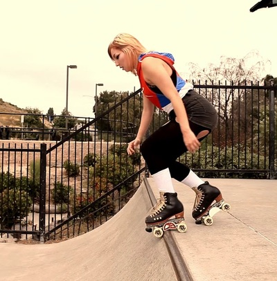
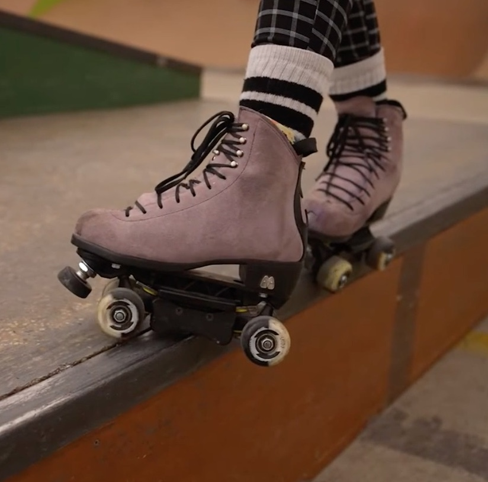
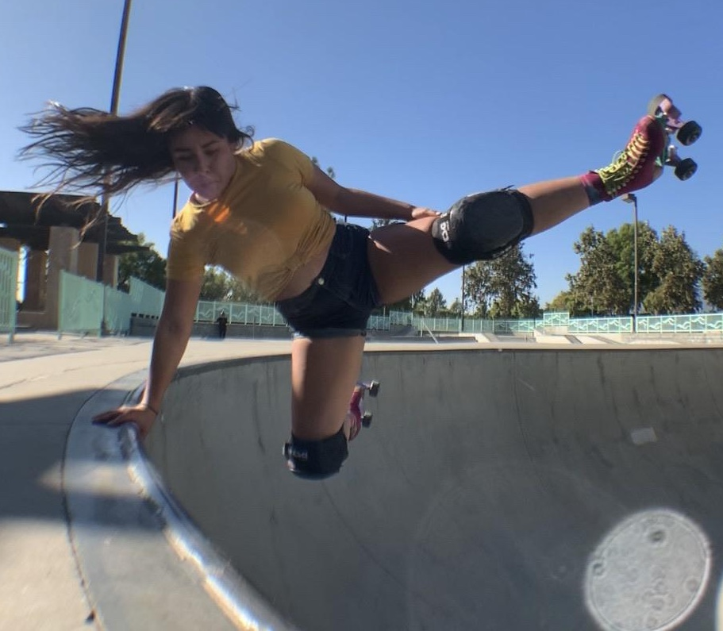
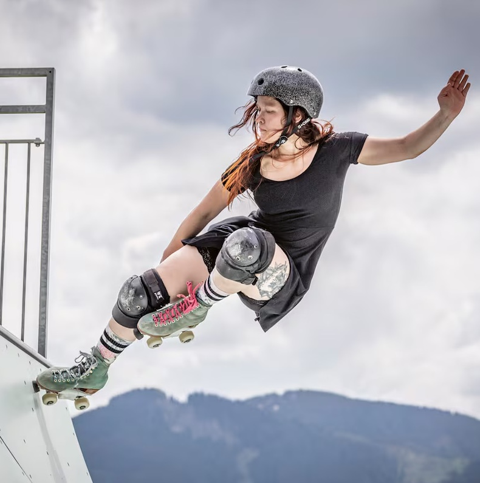

Pumping
Learn how to generate speed without pushing — the most important skatepark skill.

Learn how to generate speed without pushing — the most important skatepark skill.

A controlled way to move through ramps using toe stops for stability and gaining speed.

The first real commitment trick — entering a ramp from the top with confidence.

Your first real stall — balance, control, and coping awareness all in one.

A beginner-friendly introduction to handplant-style movement. The skater briefly places a hand on the coping for balance while adding a small controlled kick for style, without fully inverting.

A beginner-friendly stall where the skater balances on one foot using a toe stop on the coping, while lifting the other leg into a controlled “flamingo” position. This trick builds balance, confidence, and toe stop control on ramps.